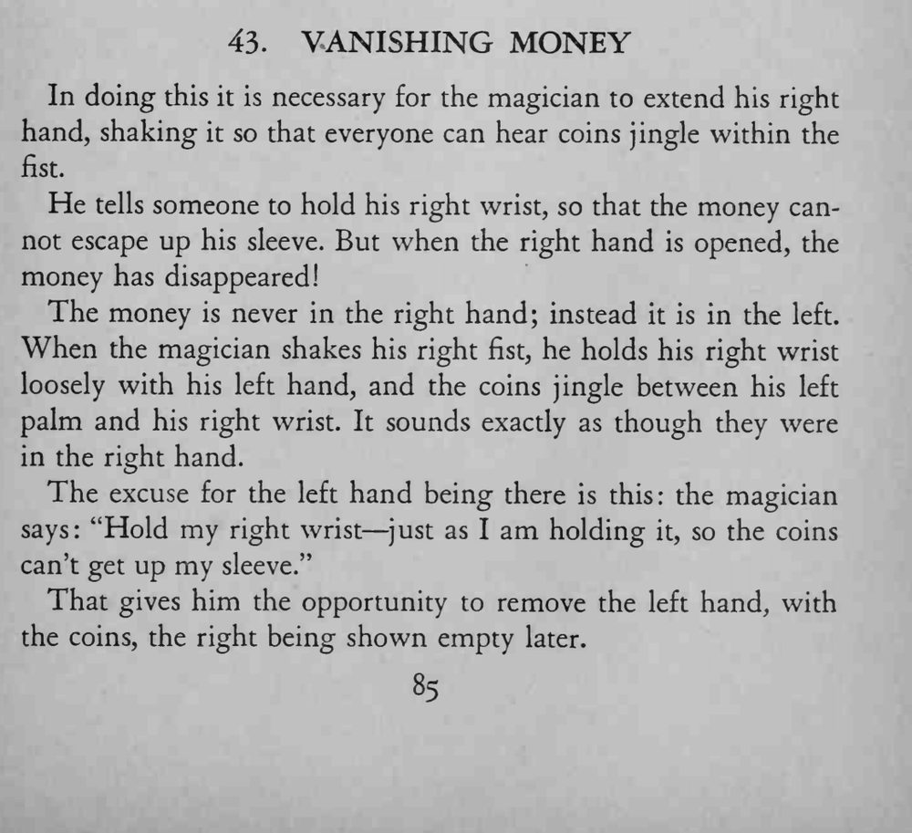

魔术师右手握币，摇得叮当响，还让人抓住右腕防止钱从袖子溜走；张开右手，钱却不见了。
左手握腕的姿势要自然，让硬币贴在腕内侧，摇动时才能响得像在右手里。

In doing this it is necessary for the magician to extend his right hand, shaking it so that everyone can hear coins jingle within the fist. He tells someone to hold his right wrist, so that the money cannot escape up his sleeve. But when the right hand is opened, the money has disappeared! The money is never in the right hand; instead it is in the left. When the magician shakes his right fist, he holds his right wrist loosely with his left hand, and the coins jingle between his left palm and his right wrist. It sounds exactly as though they were in the right hand. The excuse for the left hand being there is this: the magician says: "Hold my right wrist — just as I am holding it, so the coins can't get up my sleeve." That gives him the opportunity to remove the left hand, with the coins, the right being shown empty later.